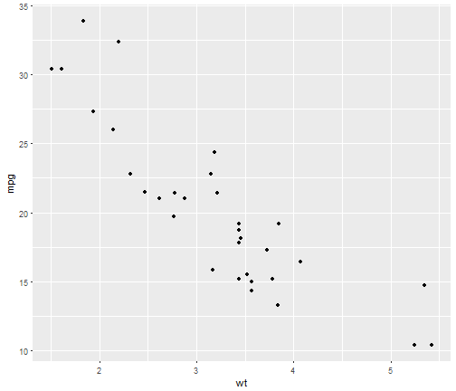

First, I will create a Shiny application and deploy it on Rstudio's servers. Second, I will use Slidify or Rstudio Presenter to prepare a reproducible pitch presentation about your application.
First, I will create a Shiny application and deploy it on Rstudio's servers. Second, I will use Slidify or Rstudio Presenter to prepare a reproducible pitch presentation about your application.
This Shiny application scrapes the data from metacritic.com for top new releases for either PS4, X-Box one or PC games. The plot is interactive, the user can hover on the data point to display title details.
This application is thought to help potential video-game buyers make an educated decision of the quality of game available at any time.
This work is based on my submission from Week 3. It adds additional Platforms and filter by score (either User Score or Metascore)
require(ggplot2)
qplot(wt, mpg, data = mtcars)
